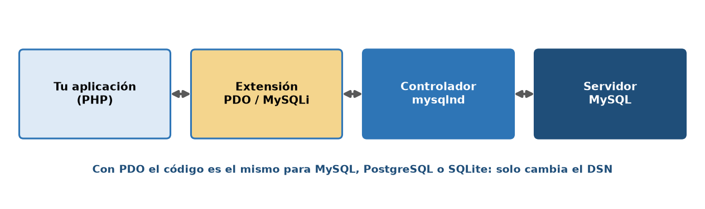
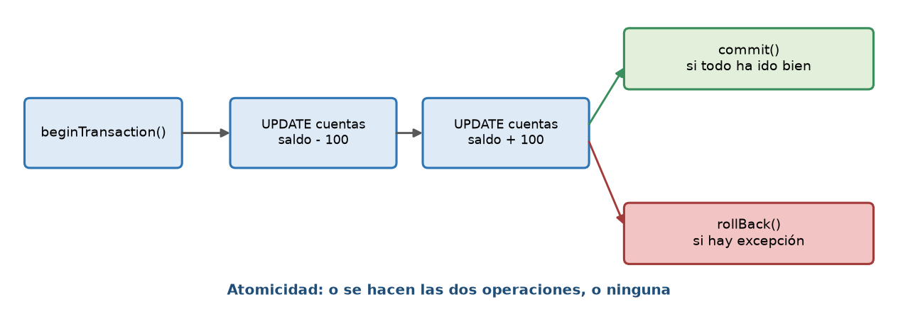
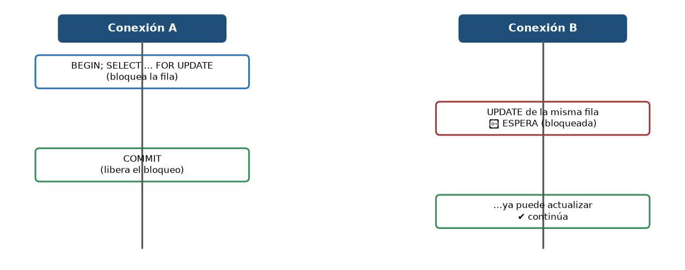
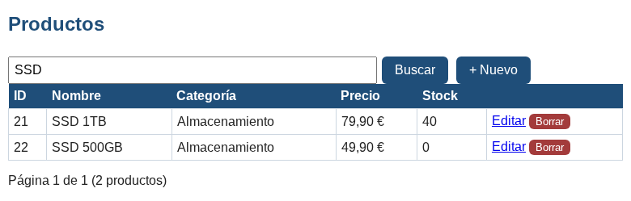
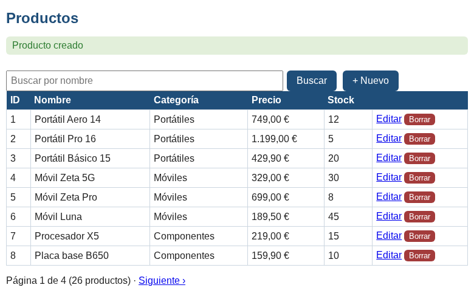
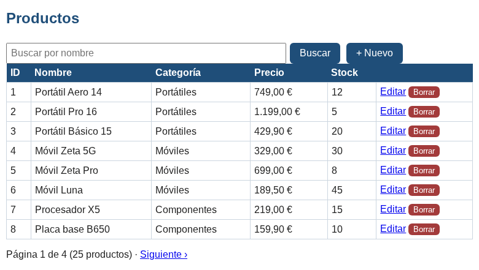
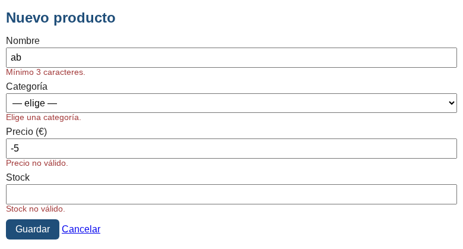
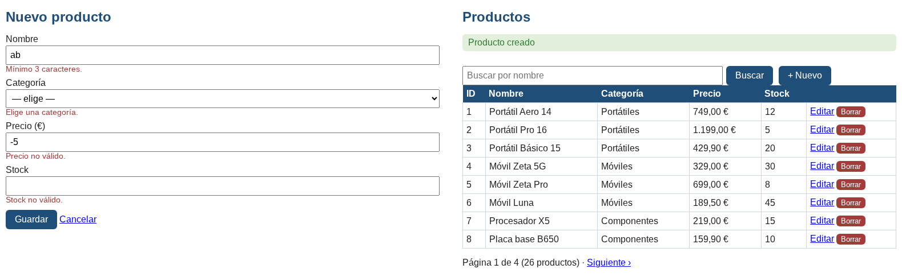

Inicio › UT3
Qué se trabaja
- Conexión con PDO, consultas preparadas,
fetchen distintos modos. - CRUD completo, transacciones y gestión de errores.
Los ejemplos de esta unidad necesitan MySQL: usa el entorno Docker. Aquí tienes capturas reales de su resultado.
Figuras y capturas







